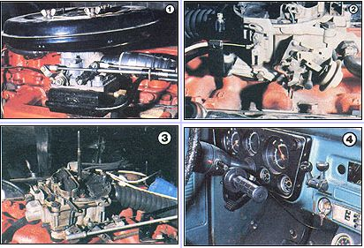
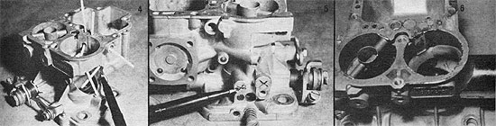
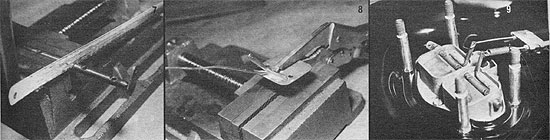
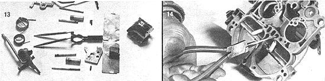
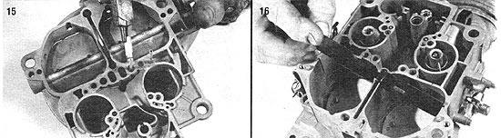
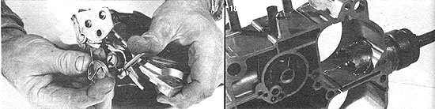
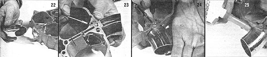
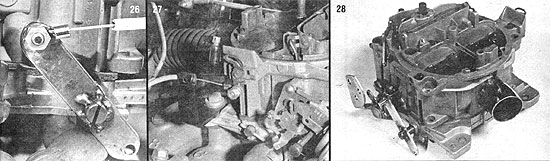

Build A Pair Of Dual-Fuel Carburetors
The ability to back up your wood-gas power with gasoline can be an inexpensive convenience, including detailed photographs and diagrams, explicit instructions.
By the Mother Earth News editors
January/February 1983
The ability to back up your wood-gas power with gasoline can be an inexpensive convenience.
When we reported on the wood-gas-powered sawmill at MOTHER'S Eco-Village (see issue 78, page 158), we detailed the mechanical aspects of the unit's drive train and described several changes we'd made in the generator, cooler/filter, and circulation systems which - together - produce and prepare the wood-derived fuel.
With this article, then, we'll go on to tell you about the dual-fuel (gasoline or wood-gas) carburetion setup that feeds our six-cylinder sawmill engine, and then explain how we converted our Chevy V-8 truck's fourbarrel Rochester to give that vehicle twin-fuel capability.
In both cases, our goal was to simplify our earlier fuel metering designs by eliminating the need for two individual carburetors (one for each fuel used) . . . and so, after a bit of preliminary searching to locate common production Garbs that had [1] separate primary and secondary circuits and [2] large enough bores in the latter half to accommodate the necessary flow of wood gas, we went ahead and modified the devices to allow them to handle either liquid or gaseous fuel.
Generally, two-stage carburetors - whether they're of the two- or four-barrel type - are designed to operate, under most conditions, on their primary circuits . . . since the small throats, booster venturis, and lean jetting found in these main circuits assure that a minimum of fuel is used.
However, should there be a demand for additional "punch" - as might be required for passing - the large secondary barrels come into play when the accelerator is depressed beyond a certain point, and deliver a supplemental mixture of fuel and air to the engine's cylinders. This backup system is generally activated by a mechanical linkage that's connected to the primary throttle shaft.
Put very simply, what we did (with each carburetor) was to disengage the secondary circuit from the primary and adapt the auxiliary system to enable it to utilize the gaseous wood fuel . . . by doing little more than sealing several orifices with epoxy, modifying the throttle and choke assemblies, and running a large gas inlet port through the carb body's rear wall.
Then, to allow both stages of the device to function independently, we used separate throttle and choke plate controls for each one. This permits the gasoline, or primary, side of the carburetor to deliver liquid fuel to the engine as it's always done . . . but when the throttle plates are closed and airflow through that section is effectively shut down, the secondary - or wood-gas - half takes over and feeds the powerplant instead. In this mode, the secondary throttle plates work to control the speed of the engine (as usual), and the choke flap can be adjusted to regulate the air/fuel ratio. (A small tension spring - placed between the choke control cable and the flap lever - allows the pivoting valve to fluctuate slightly and thus seek the ideal position automatically.)
A TWO-BARREL CONVERSION FOR SMALL ENGINES
The fuel delivery system used on our 250-cubic-inch Chevy-powered sawmill is based on a Ford Autolite/Motorcraft 5200 (used in Pintos with 122- and 140-cubic-inch four-cylinder or 171-cubic-inch V-6 engines), or a Holley 5210 (found in Vegas equipped with 140-cubic-inch fours) two-stage, two-venturi carburetor.
Before making modifications to the Garb body, we fabricated an adapter box to mate the two-barrel fuel mixer to the six-cylinder's single-hole manifold. To do this, we simply cut a 4-1/2" length of 1/8" X 2" X 4" tubular steel, and then trimmed out two 1/8"-thick flat plates to cover the openings at each end of the tube.
Then, prior to welding these caps in place, we used the base gaskets from the original and the new carburetor as templates to determine the position of the mounting and venturi holes in the upper and lower surfaces of the chamber. (Note that the bottom opening will be directly below the port for the secondary venturi, since this powerplant is run almost exclusively on wood gas.)
Once the 1-3/8" and 1-1/2" holes had been drilled in the top of the chamber, and a 1-3/4" opening in its bottom, we went on to drill a pair of 13/32" bores to use when securing the box to the Chevy manifold, and four 11/32" holes to accommodate the 5/16" X 1-1/4" carburetor mounting bolts . . . which were inserted from the inside and welded in place.
Finally, we drilled and tapped a 27/64" hole in one of the end plates, to accept a 1/4" pipe to 3/8" hose elbow fitting (for the engine's PCV line, since these wasn't an appropriate fitting on the manifold) . . . then welded those caps in place to complete the chamber.
With the adapter box finished, it was a simple matter to make up some hardware to support the carburetor's air cleaner and to hold the control cables in place. The latter piece of equipment is nothing more than a 12" length of 1/2" steel rod with 3 inches at one end hammered flat (to a thickness of about 3/16") under heat. The support was then bent into an offset so approximately 5 inches - opposite the flattened end - was left straight.
Because we used an outboard motor throttle control on the sawmill, we fabricated two slotted collars - from 1" sections of 1/4" pipe - to accommodate the grooved cable housings which came with that piece of hardware. By tacking the collars to the support arm, then welding the arm to the side of the adapter box (after first positioning the carburetor on top of the chamber to assure proper alignment with the throttle shafts), we were able to provide a sturdy mount for both gasoline and wood-gas control cables. (Of course, if you should choose to use a different kind of throttle arrangement, it'd be a simple matter to weld whatever hardware was required to that support arm instead.)
The air cleaner housing and filter assembly (Fram Kit No. FA189PL2) was purchased as a replacement unit for the standard Vega air box. To fasten it to the carburetor, we simply slipped the assembly over four posts that we'd made by brazing 10-32 nuts to one end of 1-1/2"-long sections of 3/8" brake line, and 5/16" X 1" studs to the other. Wing nuts hold the filter/cleaner unit tightly in place, and a piece of duct tape - spread over the round opening within the center chamber - prevents dirty air from bypassing the element.
The photographs accompanying this article illustrate the modifications that must be made to the carburetor body itself in order to complete the conversion. These, together with their captions, should be all you'll need to build your own dual-fuel carburetor based on our design . . . which can be adapted to any gasoline-powered engine of 300 cubic inches or less.
A FOUR-BARREL CONVERSION FOR BIG-BLOCK ENGINES
Those of you who are working with larger powerplants will be interested to know that the dual-fuel system on our Chevy truck's 454-cubic-inch V-8 was fabricated from a two-stage, four-barrel Rochester Quadrajet carburetor. Since this piece of equipment was, at one time or another, installed on almost every big-block GM engine, it should be no problem to find one in good condition at an auto salvage yard. (Be aware that the series designation on our unit is 4MV, which simply means that it's a four-venturi design with a manifold-mounted thermostatic choke coil. Other Quadrajet series Garbs may work as well, but we'd suggest finding a pre-1973 model, as pictured.)
Since the Quadrajet is such a popular carburetor, there's no need to make an adapter box to fit it to a non-GM engine, because most auto parts stores sell adapter plates - for about $10 - which will allow you to do just that.
In our conversion, the primary - or gasoline - throttle linkage remained stock . . . and the secondary, or wood-gas, setup demanded little more than the addition of a 1/8" X 3/4" X 3" arm to the throttle shaft, which we connected to the throttle cable of a motorcycle twist-grip equipped with a manual cruise control (refer to Photo 26).
The secondary choke flap position, which determines the amount of air entering the wood-gas section of the carburetor, can be adjusted with a bicycle gearshift lever and cable. (This setup, like that on the smoke throttle, is secured to the controlled component by way of a crimped eyelet at the cable's tip.) A second bike shifter - this one connected to the center rivet of the distributor's vacuum advance diaphragm - governs the engine's ignition timing under load.
Finally - in order to allow the stock air cleaner housing to clear the wood-gas feed tube - we made up a 2 "-high, 5 "-diameter sheet-metal collar to fit between the carburetor and its lid, then simply threaded in a replacement mounting that was 2" longer than stock.
The step-by-step four-barrel carburetor conversion is detailed in the accompanying photos and captions, and the modified fuel mixer should be compatible with any V-8 engine having a displacement greater than 300 cubic inches.
EDITOR'S NOTE: Those interested in seeing a detailed illustration (in "exploded" form) of the carburetors described above can get further pictorial information from any popular auto repair manual, likely available in most local libraries. For information on how to get detailed plans for a complete wood-gas system, turn to page 45.
|
 Staff Photos [1] The modified Ford Autolite/Motorcraft 5200 carburetor mounts to our 6-cylinder Chevy sawmill powerplant with a home made adapter box. [2] The air/fuel ratio on our truck's V-8 engine can be regulated, in the wood-gas mode, by a control cable connected to the secondary choke flap. [3] Here's the dual fuel Quadrajet after doing 15,000 miles on our Chevy's V-8. [4] A twist-grip throttle and two bicycle shift levers serve as inside-cab wood-gas controls. |
 [1] The parts removed (after separating the air horn from the main body) from the Pinto carburetor include ?clockwise from the top ? the choke thermostat assembly, two casting bosses (cut from the main body's upper left side, next to the primary bore), the secondary booster venturi, the brass vent fitting, the fuel mixture stop pin, the distributor vacuum advance fitting, the secondary main metering jet, main well tube, idle jet, high speed bleed, and operating lever. The center group includes unneeded choke parts. [2] Place the body in a vise and ? using a 1-1/4"" hole saw ? bore an opening into the rear wall of the secondary barrel, centered and 1-7/16 inches up from the base. [3] Cut a 3-1/2"" length of 1-1/4"" thinwall chromed sink drainpipe and slide it into the opening so it butts against the shoulder of the booster venturi slot. Mark the cutting line with a felt-tip pen, using the barrel's wall as a guide, then cut along the mark with aviator's snips. |
 [4] These matchsticks indicate the holes that'll need to be filled with epoxy (we used a two-part pliable type that could be blended and formed like modeling clay). The pen tip points to a channel that feeds the power valve, and therefore should not be plugged. [5] The ported vacuum orifice for the distributor advance (at pen point) and the vacuum feed for the choke get sealed as well. [6] The wood-gas inlet pipe should be carefully fitted and fastened to the carb body with epoxy. When that's done, check again to make sure the power valve feed channel isn't plugged |
|
 [7] Remove the choke shaft and cut it in half, midway between the two center plate-mounting holes. [8] Cut two pieces of 1/8"" welding rod to 1-7/8"" in length, flatten one end of each, drill a 1/16"" hole through both flat parts, bend each rod to a 90? equilateral, then silver-solder or braze the rods to each choke plate where shown. [9] The independent choke shafts and plates are reassembled within the air horn, and the control cables are fastened as indicated (note the tension spring on the wood-gas choke flap lever, and the homemade clamp that holds the cables tightly to the air cleaner housing. |
 [10] The choke flap cables pass through 3/16"" holes drilled in the filter box and element. [11] The modified carburetor and all the parts necessary to mount it to the engine of your choice. [12] Here's the assembled package, ready to go. A standard radiator hose can be used to connect the Garb's smoke inlet pipe to the wood-gas generator's outlet tube. Note that the gasoline throttle lever is offset from that of the wood gas. We've installed stop arms on the latter control to allow idle position adjustment and prevent the throttle blade from opening beyond a 90? angle. (The apparatus should be compatible with any size engine up to 300 cubic inches.) |
 [13] To make the modification process simpler, the carburetor should first be cleaned in solvent, then disassembled into its three main parts (air horn, main body, throttle body). The parts that get removed in the course of the operation are, from left to right, the entire secondary linkage unit (and choke rod) . . . both secondary main discharge nozzles, main well air bleed tubes, and accelerator tubes (center: top and bottom) . . . the secondary metering rods, their two-part lever, and a mounting screw and hinge pin (middle center) . . . the secondary bore baffle . . . and a 1-1/2""-diameter section of the main body's rear wall. [14] With the air horn inverted, remove the brass air bleed and accelerator tubes from both sides of the secondary circuit. |
|
 [15] The larger main discharge nozzles should be pulled out as well. Once these brass parts have been taken out, you can seal the six holes with pliable epoxy. [16] Slip the secondary bore baffle out of its slots, then . . |
 [17] remove the secondary linkage assembly from the throttle body. [18] Using a 1-1/2"" hole saw with a 1/4"" pilot bit, carefully drill into the rear wall of the carburetor's main body until the saw penetrates the divider between the two rear barrels to a depth of one inch. (The pilot bit should be set to bore no farther than the mounting slot for the secondary baffle . . . and the cut should be centered both horizontally and vertically.) |
 [19]Remove the hole saw, then ? using a No. 12 bit ? intersect the main cut, making sure to drill only deep enough to . . . [20] separate the newly formed plug from the rest of the body so it can be pulled free. With that done, dress the opening with a file to smooth any rough edges. |
 [21] Cut a section of 1-1/2"" thinwall sink drain to about 3-1/2"" in length (you can use either a straight or an elbow fitting, depending on where your wood-gas feed hose enters the engine compartment), then slip it into the opening and mark a cutting line on both its sides, using the carburetor's walls as a guide. |
 [22] Clip the drainpipe to form a contoured ""fishmouth "". [23] Place the pipe in position, then drill a 1/8"" hole through the carb body's upper gasket surface (between the two oblong holes as shown) and the wall of the pipe beneath. Countersink the bore 3/32 inch with a 5/16"" bit in preparation for installing a 1/8"" X 3/8"" countersunk pop rivet. [24] Fasten the pipe to the carb body and check to make sure the rivet's head is flush with (or below) the gasket surface, then knockout the small nailhead left in the rivet with a 1/16"" pin punch. [25] Seal the joint between the pipe and the carburetor body with silicone compound |
 [26] Cut apiece of 1/8"" X 3/4"" flat stock to 3"" or so in length, drill a 3/16"" hole in each end and another that's offset a bit from the center, and tack-weld this lever to the end of the secondary throttle shaft to replace the small arm you removed previously. If you want to use a motorcycle twist grip control as we did, crimp a ring tongue terminal to the end of the cable and mount it to the lever. If not, standard linkage hardware can be used. [27] Drill a 5/32"" hole through the lower arm of the secondary choke shaft lever and fasten a cable-and-ring control (as shown) or a ball-and-socket terminal. A bracket ? made from a piece of 1/8"" X 5/8"" X 4"" flat stock bent to a 90? angle ? can hold the cable in place. [28] The modified carburetor, assembled and ready for installation. A 1-1/2"" radiator hose completes the joint between the smoke supply tube (from the wood-gas generator's cooler/filter) and the sink drain inlet pipe fitted to the rear wall of the altered Quadrajet. |